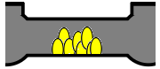

Kadonneet siemenet

Majava kadotti keräämänsä siemenet jonkin putken johonkin osaan.
Etsi siemenet suorittamalla mahdollisimman pieni määrä hakuaskeleita.
Suorita yksi hakuaskel klikkaamalla kahta saman putken luukkua. Tällöin majava kulkee klikattujen luukkujen välisen matkan putkessa ja kertoo, ovatko siemenet jossain kohtaa luukkujen välillä.